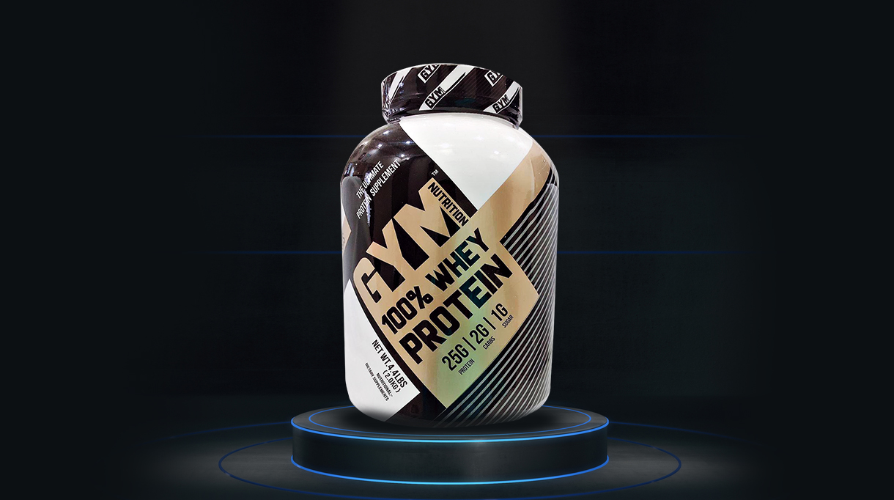
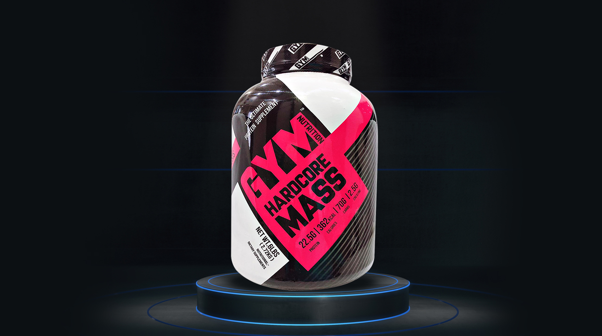
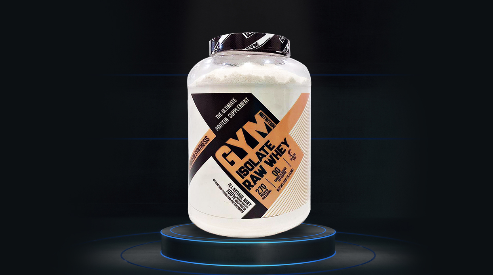

Nutritions

ISOLATE RAW WHEY
Use this product as a nutraceutical only this product is not a sole source of nutrition and should be consumed in conjunction with a nutritious diet and appropriate physical training or exercise program this product is not intended to diagnose treat cure or prevent any disease.
Available Flavours:-
Creamy Mango or Unflavoured

100% WHEY PROTEIN
To meet the needs of athletes, researchers at Gym Nutrition 100% Whey Protein have developed Gym Nutrition 100% Whey Protein with all the essentials and non-essential amino acids to build muscle after intense exercise of both short and long duration. It is customized whey that is isolated by a complex low temperature processing system that, utilizes a proprietary micro and ultra-filtrations process to ensure the highest quality whey protein. Gym Nutrition 100% whey Protein fractions such a Beta Lacroglobuin. Alpha Lactalbumin, Glycomacropetide, Immunoglobulins, Proteose Peptones, Serum Albumin, Lactalbumin and Lactoperoxides.
Available Flavours:-
Malt Chocolate Strawberry Banana Biscuit

HARDCORE MASS GAINER
The Ultimate Mix of protein and creatine to enhance muscle gain endurance. With High Protein content and essential carbohydrate, Gym Nutrition Hardcore Mass is the optimal supplement for regular Gym Goers, Body builder and strength athletes. The Results-oriented formulation comprises multiples sources of protein combined with creatine and carbohydrate proven to help you build a higher level of muscle mass and train longer and harder
Available Flavours:-
Chocolate Strawberry Vanilla